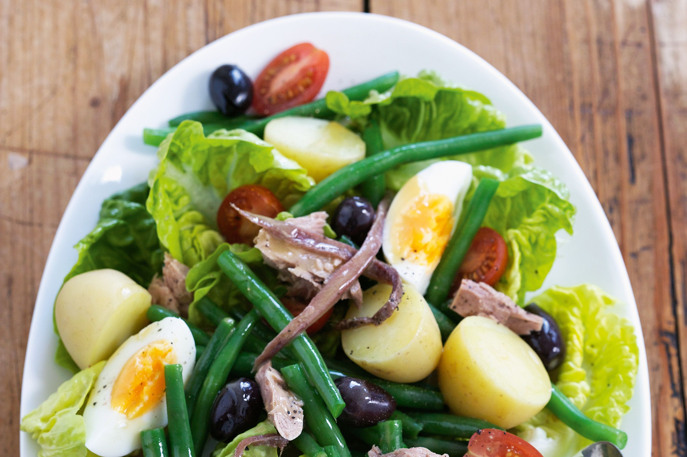

Nicoise Salad

This fancy bullshit had potatos and tuna in it
Ingredients
For the Vinaigrette:
- 1/4 cup white wine vinegar
- 1 clove garlic, minced
- 1 teaspoon Dijon mustard
- 1/2 cup olive oil
- Salt and freshly ground pepper
For the Salad:
- 2 large eggs
- 1/2 pound fingerling potatoes
- 4 ounces haricot verts or green beans
- 1 (5-ounce) can tuna packed in oil, drained (see Recipe Note)
- 2 medium plum tomatoes, quartered
- 3 cups salad greens
- 1/3 cup Nicoise olives
- Anchovy fillets (optional)
Directions
-
Make the vinaigrette: In a small bowl, whisk together the vinegar, minced
garlic, mustard, salt, and pepper. In a slow, steady stream, pour in the
oil, and whisk continuously until the dressing is emulsified.<
-
Cook the eggs: Place the eggs in a small saucepan and cover them by an
inch
with water. Cook over high heat to bring the water to a boil, then turn
off
the heat, cover the pan, and let the eggs sit for 10 minutes. Drain the
water, and place the eggs in ice water to cool. Once cooled, peel and
quarter the eggs.
-
Cook the potatoes: Place the potatoes in a small saucepan and cover with
cold water. Add a generous amount of salt and bring to a boil. Cook until
potatoes are tender and can easily be pierced with a knife, about 10
minutes. Remove the potatoes with a slotted spoon and set aside to cool.
Home